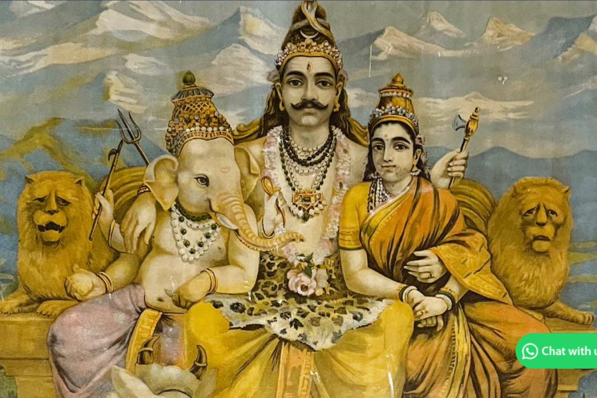
✧Descripition✧
Raja Ravi Varma was one of India's most famous artists, known for his authentic oil paintings and beautiful portrayal of Indian culture. He was among the first artists to combine Indian themes with European painting techniques, creating a unique style. His artworks brought Indian mythology, traditions, and people to life in a relatable way. Some of his most famous works include paintings of Shakuntala and timeless depictions of Indian gods and goddesses. His remarkable contribution left a lasting impact on Indian art and inspired many artists. Explore the artworks and life of Raja Ravi Varma and discover his remarkable artistic journey.
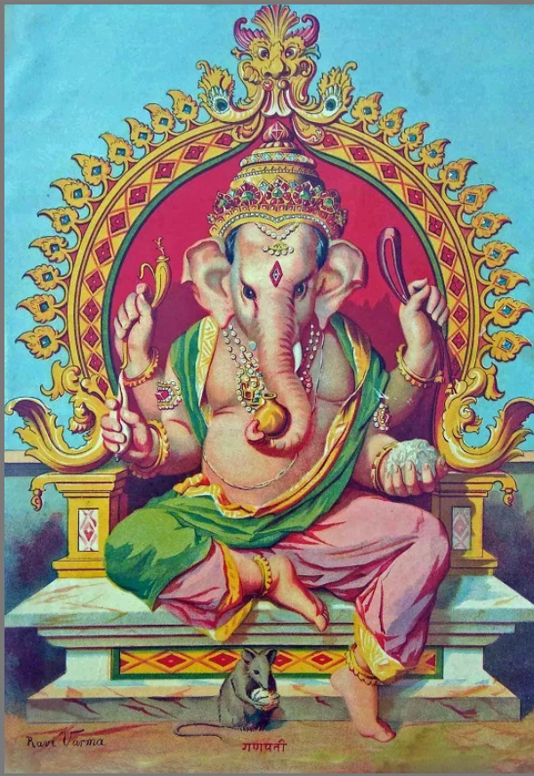
✧Descripition✧
Ganesha also known as Ganapati and Vinayaka, is one of the best-known and most worshipped deities in the Hindu pantheon. This Art work is made by one of the famous artist Raja Ravi Varma.ganesh are sitting on their sinhasan and give blessing to us This painting portrays Lord Ganesha, one of the most widely worshipped deities in Hinduism. He is traditionally associated with wisdom, prosperity, good fortune, and the removal of obstacles. The colourful decorations and traditional details create a festive and devotional atmosphere. The artwork reflects the cultural importance of Ganesha and his place in Indian traditions and celebrations. Its graceful composition and vibrant appearance make the painting visually appealing and spiritually meaningful.
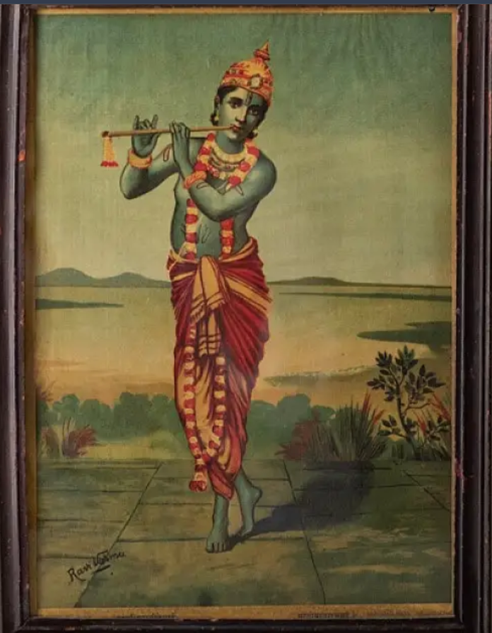
✧Descripition✧
This iconic oleograph shows Lord Krishna as a young cowherd standing in Vrindavan. He wears a red dhoti, golden crown with peacock feather, and pearl necklaces, playing his flute with divine grace. His blue skin glows against the soft pastoral landscape of Yamuna riverbank. Raja Ravi Varma combines European academic realism with Indian mythology, giving Krishna human emotions and anatomical perfection. The calm posture, gentle smile and luminous background create bhakti rasa. It was one of the most popular Ravi Varma Press prints, making God accessible to common people in their homes.
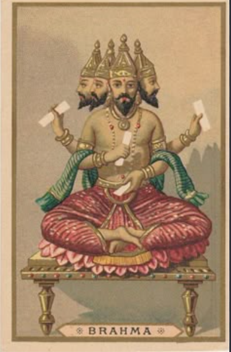
✧Descripition✧
This artwork portrays Lord Brahma, traditionally regarded as the creator in Hindu mythology. He is shown seated peacefully on a lotus, with his four faces symbolizing different aspects of knowledge and creation. The traditional clothing, divine setting, and soft colours add a spiritual quality to the painting. The artwork reflects the importance of creation, wisdom, and knowledge in Indian mythology and gives the viewer a sense of peace and divinity
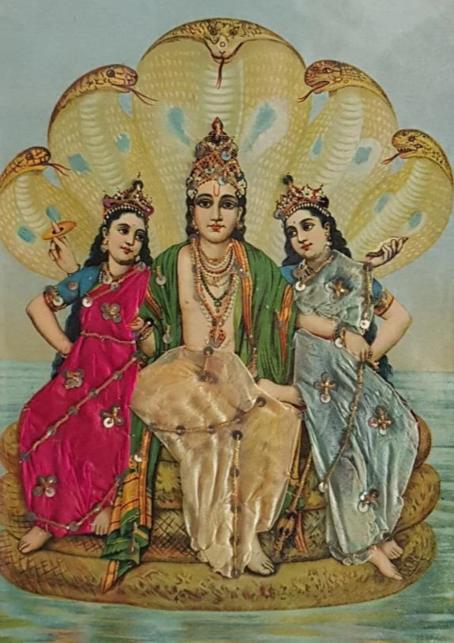
✧Descripition✧
This painting represents Lord Vishnu, one of the principal deities in Hinduism and the preserver of the universe. He is shown in a traditional divine form with a peaceful and majestic appearance. The detailed surroundings and decorative elements enhance the beauty of the artwork. The painting reflects Vishnu’s association with protection, preservation, balance, and divine strength. Its traditional style beautifully represents an important part of Indian mythology and cultural heritage.
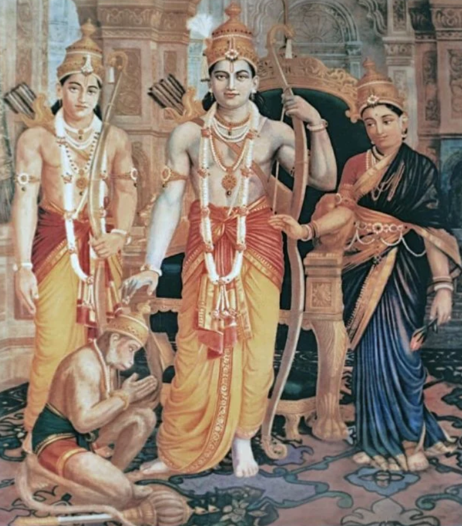
✧Descripition✧
This artwork depicts Lord Ram in a traditional devotional setting, accompanied by important figures from the Ramayana. The detailed composition reflects the story and cultural significance of Lord Ram. He is widely associated with courage, righteousness, truth, and devotion. The painting also represents the victory of good over evil and the importance of following the path of dharma. Its traditional artistic style creates a strong connection with Indian mythology and heritage.
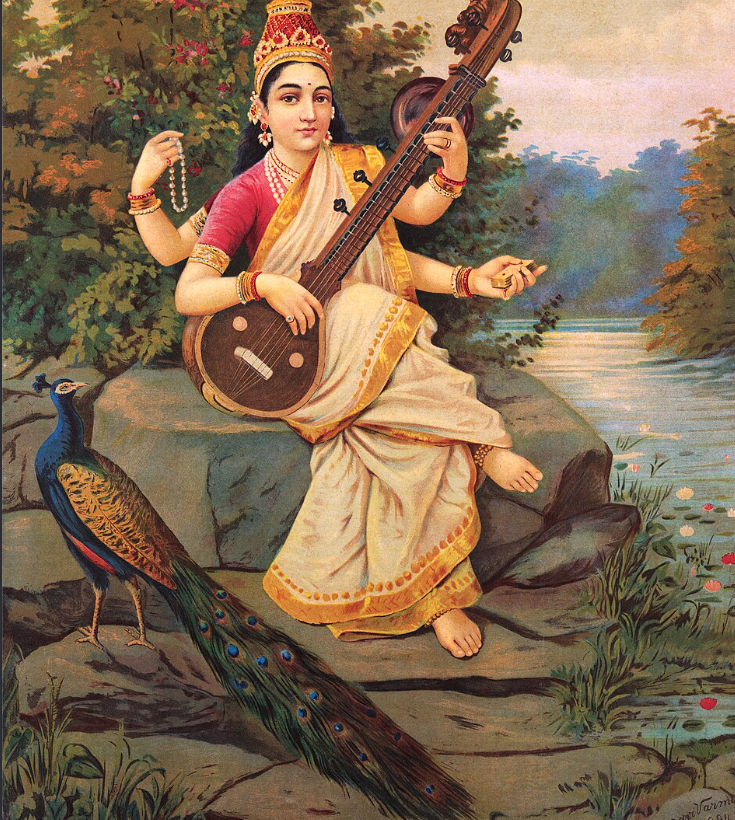
✧Descripition✧
This painting depicts Goddess Saraswati, the Hindu goddess of knowledge, wisdom, music, and learning. She is gracefully shown playing the veena beside a peaceful river, surrounded by natural beauty. The presence of the peacock adds a traditional and artistic touch to the scene. The artwork represents education, creativity, wisdom, and the peaceful pursuit of knowledge. Its calm composition creates a beautiful spiritual atmosphere.
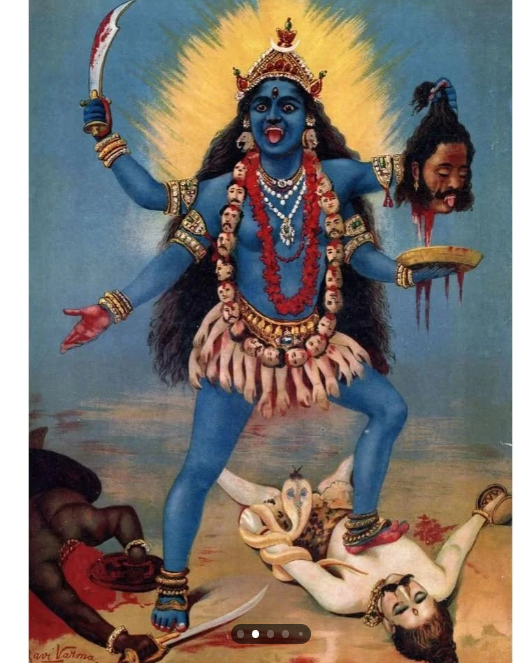
✧Descripition✧
This powerful artwork depicts Goddess Mahakali, a fierce form of the Divine Mother associated with strength and protection. Her dramatic appearance, traditional weapons, and symbolic elements create a powerful presence. The painting represents courage, divine energy, protection, and the destruction of evil. The striking composition and traditional artistic details highlight the importance of Mahakali in Indian religious and cultural traditions. The artwork conveys a strong sense of power and spiritual energy.
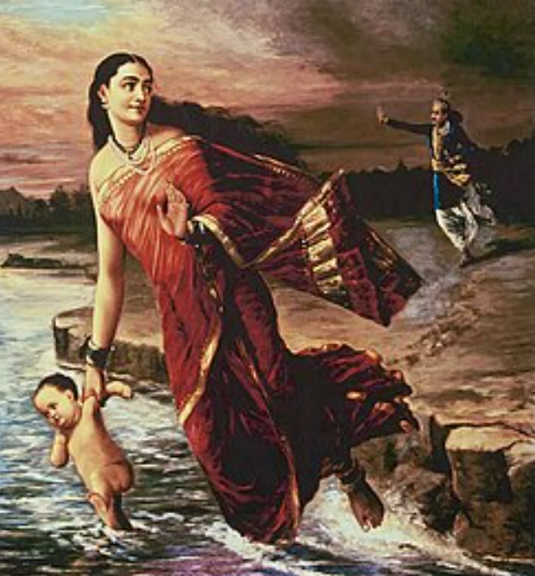
✧Descripition✧
This artwork portrays Goddess Ganga, symbolizing purity, spirituality, and divine blessings. She is beautifully represented in a graceful form, surrounded by the sacred river and natural surroundings. The painting reflects the cultural and spiritual importance of the River Ganga in India. It represents devotion, purity, and the belief in the sacred power of Ganga. The traditional style and peaceful setting give the artwork a divine and serene appearance.
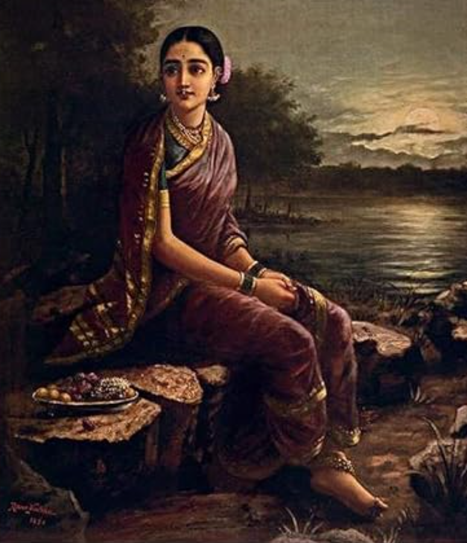
✧Descripition✧
This artwork portrays Radha Rani in a graceful and traditional style, representing devotion and divine love. Radha is an important figure in Indian devotional traditions and is closely associated with Lord Krishna. Her traditional clothing, peaceful expression, and beautiful surroundings create a calm and spiritual atmosphere. The painting reflects the importance of faith, devotion, and love in Indian culture. Its delicate composition gives the artwork a graceful and timeless appearance.
✧Descripition✧
This painting portrays Meera Bai, the famous Indian poet and devotee of Lord Krishna. She is shown in a peaceful setting with a musical instrument, reflecting her strong connection with devotional music and poetry. Her simple and traditional appearance represents her deep devotion and spiritual journey. The artwork highlights themes of faith, love, music, and devotion. The natural surroundings and calm composition give the painting a peaceful and spiritual atmosphere.
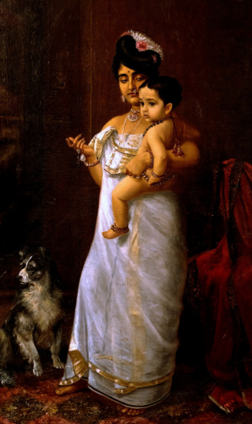
✧Descripition✧Maternal Love / Yasoda and Krishna
This painting depicts a mother tenderly holding her child against her chest, embodying universal motherhood. The woman wears a simple white saree, her face shows deep affection and protection, while the child clings to her. Painted with chiaroscuro technique, light falls on mother-child duo against dark background, highlighting emotional bond. Though labeled "Mother With Child", it is often interpreted as Yashoda and Bala Krishna. Ravi Varma elevates Indian womanhood to divine status. The work showcases his mastery in drapery, skin tones and human sentiment, becoming a symbol of nurturing love in Indian art.

✧Descripition✧Vastraharan in Kuru Sabha
This dramatic historical painting captures the most shameful moment of Mahabharata when Dushasana drags Draupadi by her hair to disrobe her in Hastinapur sabha. Draupadi in yellow saree struggles, her body language showing resistance and anguish, while Dushasana in red-green attire pulls her violently. The barren landscape with leafless tree reflects moral emptiness. Ravi Varma uses dynamic composition and bright colors to heighten drama. The painting is not just myth but a statement on woman's dignity and injustice, which resonated deeply in colonial India and became a mass-produced oleograph for awareness.
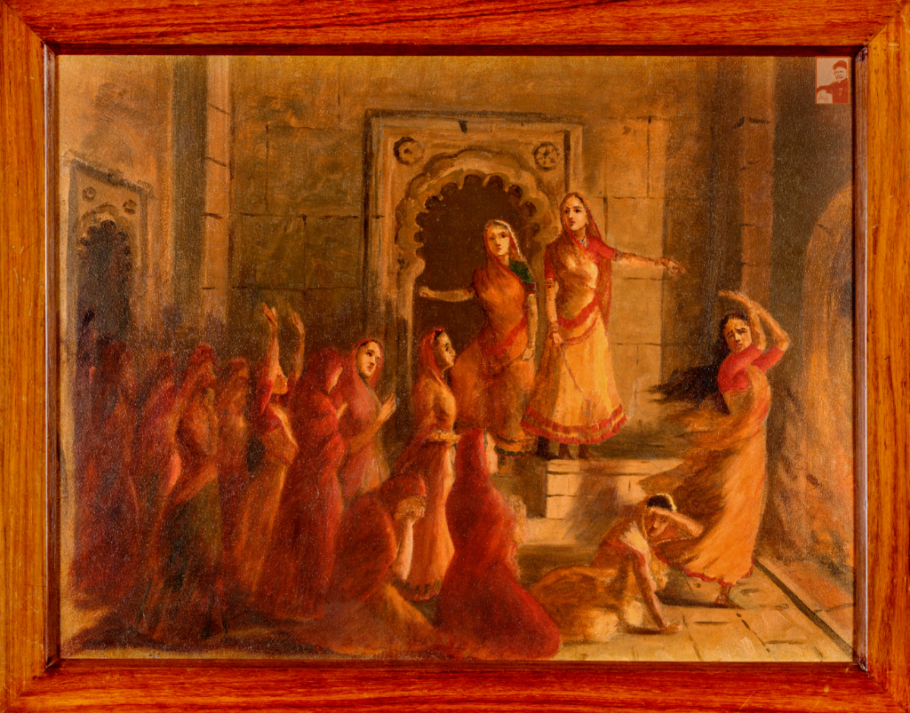
✧Descripition✧Rajput Women Committing Jauhar
This powerful painting shows Rajput women performing Johar or mass self-immolation to protect honor from invaders. Inside a fort palace, women in red and yellow ghaghras gather around fire, some crying, some praying, one woman leading them. The architecture with arches shows royal palace. The warm golden-orange tones create feeling of fire and tragedy. Ravi Varma portrays sacrifice as both horrific and heroic. It celebrates Rajput valor and women's courage to choose death over dishonor. The work reflects 19th century nationalist interest in glorifying Indian history and martial traditions.
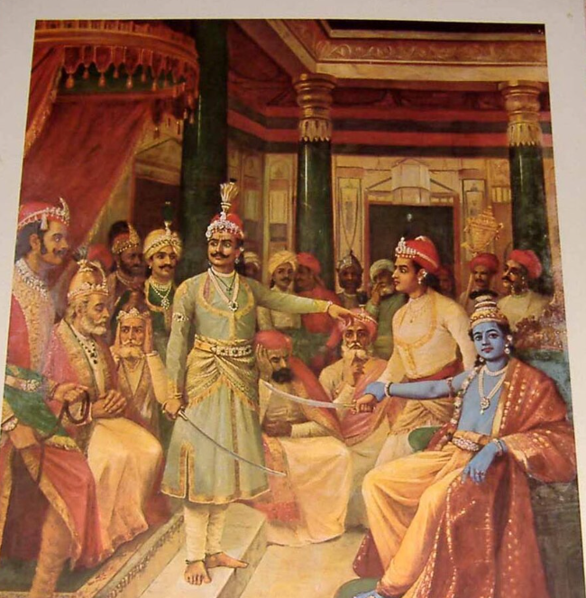
✧Descripition✧The Royal Court of a King
This court scene shows a king in golden royal attire standing in center of his sabha surrounded by ministers, courtiers and guards. The setting is an opulent palace interior with red drapes and pillars. The king appears to be addressing the sabha or listening to a petition. The figures wear turbans and Mughal-Rajput costumes, showing detailed study of textiles. Ravi Varma captures hierarchy, power and royal etiquette through placement of figures. The painting is an example of his history painting genre, reconstructing India's glorious past with European realism and theatrical lighting.
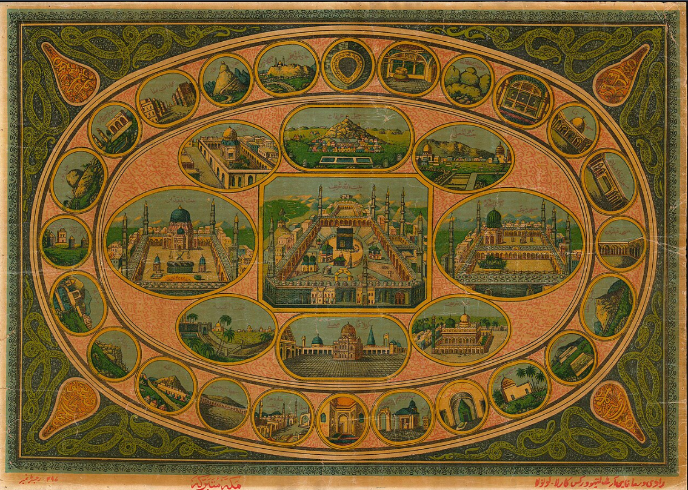
✧Descripition✧Holy Places of Islam
Labeled "Allah", this is not a conventional Ravi Varma painting but a popular oleograph of Islamic holy places published by Ravi Varma Press, Lala Deul. The oval composition contains miniature views of Mecca, Medina, Karbala and other shrines surrounded by Quranic inscriptions and border medallions. The golden-yellow palette and decorative layout resembles Persian miniature. It shows Ravi Varma Press's secular business strategy - printing Hindu, Christian and Muslim religious images for all communities. The work represents syncretic culture and how print technology brought sacred geography into homes of Muslim devotees.
.png)
✧Descripition✧Mosque
This oleograph titled "Mosque" depicts the Kaaba in Mecca, the holiest site in Islam, surrounded by minarets, courtyards and pilgrims. The aerial perspective shows entire mosque complex with green hills behind. Detailed architecture with arches and domes is rendered with European perspective. Like "Allah", this was mass-produced by Ravi Varma Press for Muslim clientele. It demonstrates Ravi Varma as entrepreneur who understood India's religious diversity. For many Indians who could never go for Hajj, such prints provided darshan of holy place. It is an important example of early visual mass culture and communal harmony.
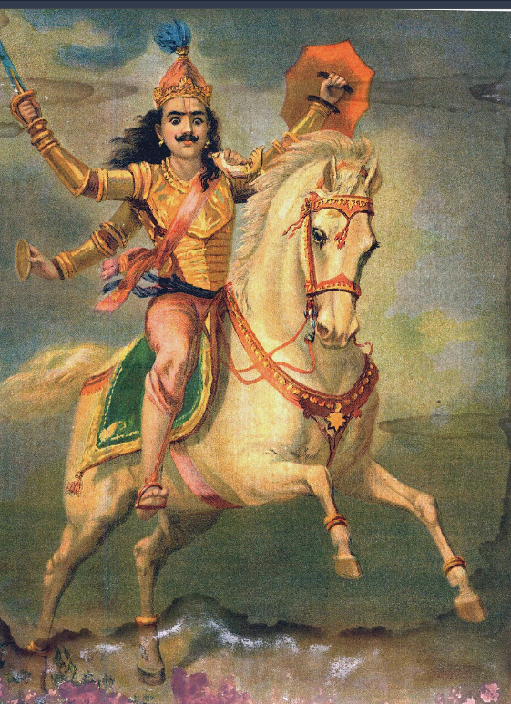
✧Descripition✧The Tenth Avatar of Vishnu
This vibrant painting shows Kalki, the future tenth avatar of Vishnu, riding a white horse and wielding a sword to destroy evil in Kaliyuga. He is depicted with four arms, crown and golden jewelry, horse galloping over clouds. The dynamic movement, flowing drapery and dramatic sky show Ravi Varma's academic training. Kalki symbolizes hope, justice and end of darkness. The image combines Puranic description with European equestrian portrait tradition. It was hugely popular as calendar art, representing belief that God will come to restore dharma when world becomes too sinful.

✧Descripition✧Two Women in Fear
Shakuntala and her friend Anasuya or Draupadi and another woman. Two women in red sarees huddle together, one gesturing in fear towards something unseen in dark forest. Their body language shows anxiety and dependence. The dark jungle background with soft light creates romantic, mysterious atmosphere. Ravi Varma excels in depicting female emotion, sisterhood and vulnerability. The oleograph was popular for its emotional appeal and narrative quality, inviting viewer to imagine story behind their fear.
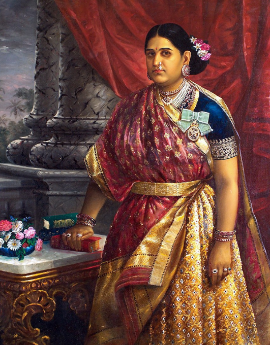
✧Descripition✧Royal Portrait
Titled simply "Women", this is a royal portrait of a Maratha queen, likely Maharani Chimnabai or Sayajirao Gaekwad's wife, in traditional Nauvari saree with rich red and gold zari, pearl jewelry and nath. She stands confidently in palace interior with red curtain and marble pillars. Her posture is dignified and modern for that era. Ravi Varma was famous for portraits of Indian royalty who wanted European-style realism. He gave Indian women grace, strength and individuality, breaking from idealized goddesses to real persons. The painting celebrates Indian womanhood, royalty and new self-image of modern India.